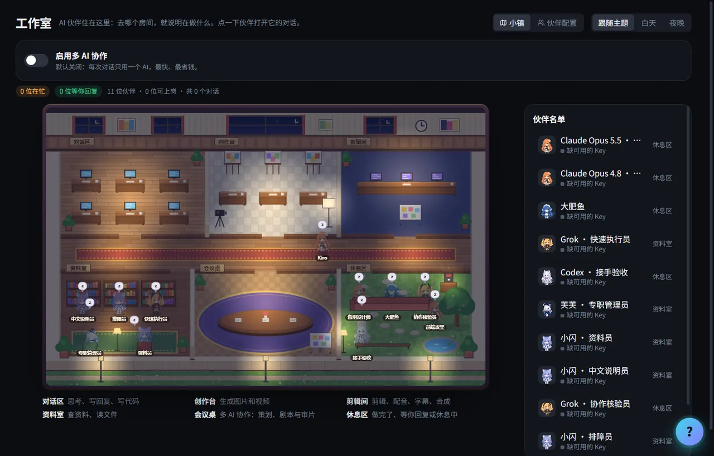
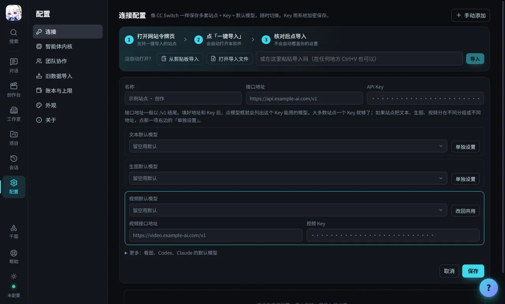
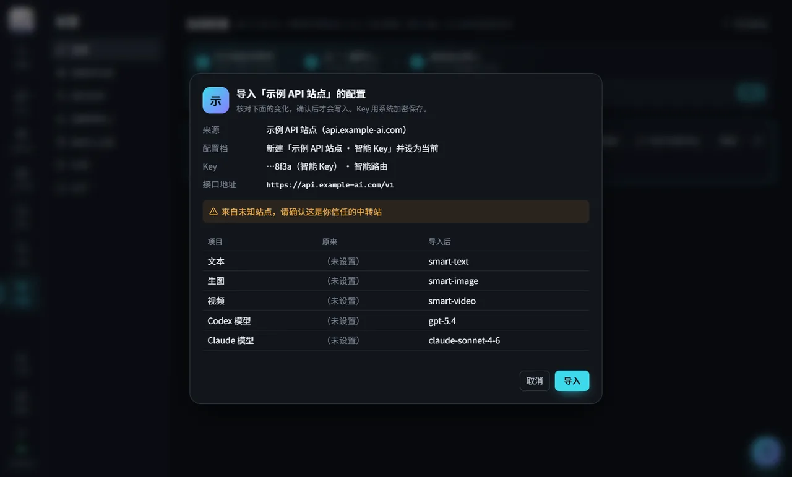
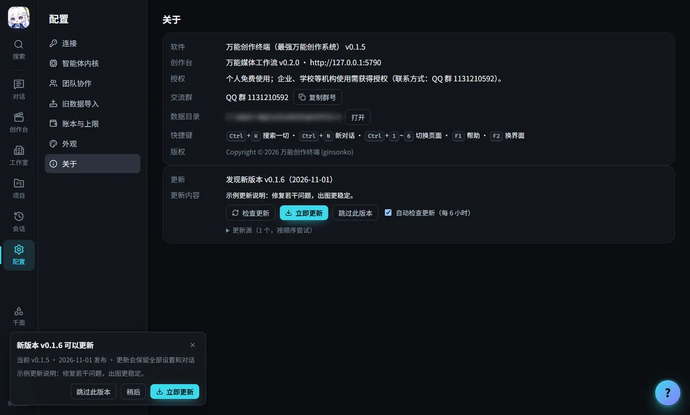

对话做项目
选 Codex 或 Claude Code 当「引擎」，它会自己规划、动手、检查，把成果放进「作品」。中途可以插话改方向。
OmniCreator · v0.1.5 内测版
想做什么，直接说。
把 Codex / Claude Code 对话 和 万能媒体工作流创作台 装进一个桌面软件。写文案、生成图片、生成视频、管理项目，在一个窗口里完成；接任何 OpenAI 兼容的 API 站点就能用。
能做什么
不用学提示词，像跟同事交代任务一样说清楚想要什么。下面每张卡片里的话，都可以直接复制去用。
选 Codex 或 Claude Code 当「引擎」，它会自己规划、动手、检查，把成果放进「作品」。中途可以插话改方向。
标题、短视频脚本、商品详情、活动通知……用你配置的文本模型来写，满意了再让它出图配图。
海报、头像、商品图、插画、分镜。通常 1 到 2 分钟出图，自动保存。可以把参考图直接拖进输入框。
让图片动起来、做产品短片、小漫剧。视频一般要几分钟，助手会一直等到出结果，不用盯着。
内置完整创作台：自由创作、画布创作、项目与剧集、批量生成、3D 导演台、媒体素材库。AI 能直接调用，你也能自己上手。
像素小办公室里，每个对话是一位 AI 同事，在忙什么一眼就知道。同一主题的对话自动归成项目，点「继续这个项目」不用从头解释。

同一个软件，有多套完全不同的操作方式。数据、连接和对话全部共用，随时切回来。按 F2 换界面。
另有「账本与上限」：单个对话、每天、每月都能设花费上限；Key 加密保存在本机，不会上传。
怎么用
在下方选择你的系统。Windows 双击安装；Mac 把图标拖进「应用程序」，第一次打开按 这里的方法 放行。
在任意兼容 OpenAI 的 API 站点（例如基于 new-api 搭建的站点）注册、充值，进入「令牌 / API Key」页面准备 Key。
站点支持「一键导入」就点一下，配置自动带进软件；不支持就到「配置 → 连接 → 手动添加」，填一次接口地址和 Key，再选 文本 / 生图 / 视频 模型。
回到首页，说一句你想做的事，比如“帮我做一张新品咖啡海报”。成果自动出现在「作品」里。
连接站点
软件本身不卖模型。它连接你选择的 API 站点，用你的 Key 调用文本、图片和视频模型，费用以站点实际扣费为准。
A · 通用接法
适合所有站点。自己创建 Key，在软件里填一次地址和 Key，再选三个默认模型。
https://你的站点域名/v1。
不知道选哪个模型？文本选站点推荐的对话模型；生图选名字里带 image 的模型；视频选站点标注为视频的模型。看图模型和编程助手模型在「更多」里，不确定就留空。
B · 更省事
智能 Key 会自动挑选可用的模型线路，一键导入把文本、生图、视频和编程助手的配置一次带进软件。

确认之前不会改动任何设置；导错了可以在「配置 → 连接」里撤销上次导入。
完整图文步骤见 使用手册 和 智能路由站点接入手册。
教程视频
一条视频讲完：下载安装、准备 Key、连接站点（手动添加或一键导入）、做出第一张图和第一条视频，再到更新与卸载。按章节跳着看。
两分钟看懂万能创作终端能做什么。
下载
当前版本 v0.1.5 内测版。下载和使用软件免费，模型费用按你所用站点的实际扣费。
点屏幕左上角的苹果图标 →「关于本机」。看到「芯片 Apple M1 / M2 / M3 / M4…」就选 Apple 芯片版；看到「处理器 Intel…」就选 Intel 版。
推荐安装版：有桌面快捷方式和开始菜单，网站上的「一键导入」可以直接唤起软件。免安装版适合不想安装或放在 U 盘里用，第一次启动要先解压，会慢一点。两种都能在软件里直接更新。
Windows：在文件所在文件夹按住 Shift 右键 →「在此处打开 PowerShell 窗口」，输入 Get-FileHash .\文件名.exe。
Mac：打开「终端」，输入 shasum -a 256 ~/Downloads/文件名.dmg。
结果和上面卡片里的 SHA256 一致，就说明文件完整、没有被改过。
有国内镜像时，卡片上会出现「国内镜像」按钮。也可以加入 QQ 群 1131210592 获取群文件。
历史版本与更新说明见 GitHub 发布页 ↗
安装、更新与卸载
内测版还没有代码签名，出现蓝色窗口「Windows 已保护你的电脑」时：
安装不需要管理员权限，一路「下一步」即可。
内测版没有经过苹果公证，第一次打开需要手动放行（需要 macOS 13 或更高）：
sudo xattr -dr com.apple.quarantine "/Applications/万能创作终端 TideVerse.app"软件装好后的名字是「万能创作终端 TideVerse」，可以和其他版本装在同一台电脑上，互不影响。Mac 版不自带 Codex，需要时在「配置 → 智能体内核」点「一键安装 Codex」。.dmg 打不开时，可以在 GitHub 发布页下载同名的 .zip，解压后把「万能创作终端 TideVerse」拖进「应用程序」。

~/Library/Application Support/万能创作终端数据文件夹的准确位置可在「配置 → 关于 → 数据目录」查看。
常见问题
下载、安装和个人使用软件都不收费。对话、写文案、出图、出视频会调用你所连接站点的模型，按站点的实际用量计费。软件里的「账本与上限」能看到花费，还能给单个对话、每天、每月设上限，到了就自动停。
任何兼容 OpenAI 接口的站点都可以，常见的是基于 new-api 搭建的站点。注册、充值、创建 Key 后，按「连接站点」里的 A 方法手动配置即可。如果站点支持智能路由和一键导入，用 B 方法更省事。
一般一个 Key 就够，软件里填一次，文本、生图、视频共用。站点把它们分在不同分组，或你想分开看花费时，可以多建几个，在连接表单里给那一项点「单独设置」，填它自己的 Key（和接口地址）。
不用提前装。Windows 安装版自带 Codex；免安装版和 Mac 版缺少时，到「配置 → 智能体内核」点「一键安装 Codex」，装在软件自己的文件夹里，不会改动你电脑上原有的 Codex / Claude 配置。
不会强制。有新版时左下角提示，可以「立即更新」「稍后」或「跳过此版本」。更新会保留全部设置和对话。
Key 用系统自带的加密保存在你的电脑上，不会上传。也不要把 Key 发给任何人，包括软件里的 AI 助手。
常见于免安装版或浏览器拦截。在站点弹窗里复制导入码，回到软件按 Ctrl+V（Mac 上 ⌘+V）；或者下载导入文件，在「配置 → 连接」里点「打开导入文件」。导入链接通常 10 分钟内有效、只能用一次，过期了回站点再点一次。
每个对话有自己的成果文件夹。成果会出现在对话下方和右侧「作品」栏，点开大图可以「在文件夹中显示」。全部对话在「会话」页。
在软件里按 F1 打开帮助，直接问「第一次用怎么开始」「生成的作品在哪」。也可以加 QQ 群 1131210592 提问，或到 GitHub Issues 反馈（附上截图和「配置 → 关于」里的版本号）。
使用许可